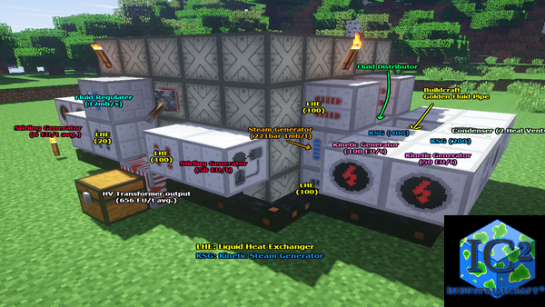
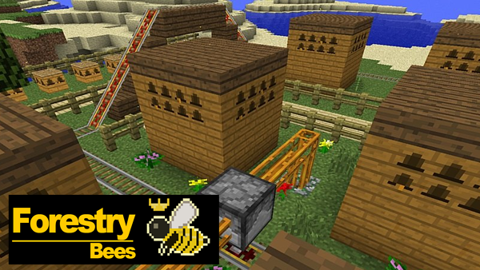
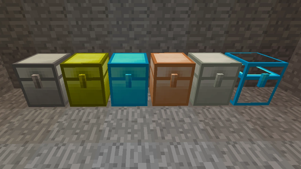
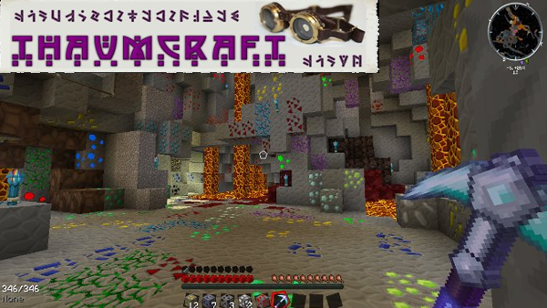
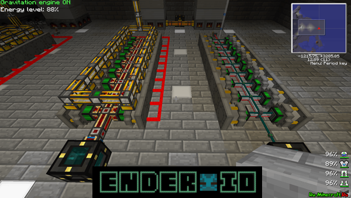

Добро пожаловать
Приветствую тебя на своём сайте, здесь самые интересные моды для майнкрафта!

Очень популярный мод который добавляет в игру новую механику создания оружия и инструментов, а с аддонами и брони, вы сможете создавать инструменты из новых материалов, комбинировать их для получения различных свойств.

Огромный технический мод, отчасти один из родоначальников всех индустриальных модов в майнкрафте, добавляет огромное количество предметов и возможностей связанных с промышленным производством, постоянно обновляется и дорабатывается на протяжении более 7 лет.

Мод зачастую являющийся отличным дополнением для любой индустриальной сборки, добавляет систему пчеловодства и систему разведения бабочек, множество новых деревьев, автоматические фермы, разнообразные приспособления для сельского хозяйства.

Самый популярный мод добавляющий в игру новые сундуки, мод очень прост, но позволяет более удобно и компактно хранить свои вещи. Мод не нарушает и сильно не изменяет стиль игры, находится так высоко только из-за своей огромной популярности.

Один из самых популярных и крупных модов на магическую тематику, разрабатывается уже более 5 лет, имеет множество дополнений и интеграций в другие моды. Добавит в игру невероятное количество магии, кардинально изменит стиль игры и линию развития персонажа, добавит множество новых игровых механик.

модификация, которая добавляет в игру различные машины, генераторы для производства μi-энергии, приборы для удалённого доступа к предметам, трубы для транспортировки и резервуары для хранения предметов, жидкостей, энергии, а также провода для передачи сигналов красного камня.
модификация, которая добавляет в игру различные машины, генераторы для производства μi-энергии, приборы для удалённого доступа к предметам, трубы для транспортировки и резервуары для хранения предметов, жидкостей, энергии, а также провода для передачи сигналов красного камня.
модификация, которая добавляет в игру различные машины, генераторы для производства μi-энергии, приборы для удалённого доступа к предметам, трубы для транспортировки и резервуары для хранения предметов, жидкостей, энергии, а также провода для передачи сигналов красного камня.